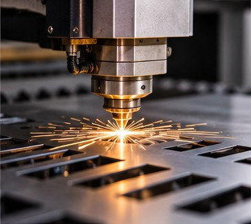
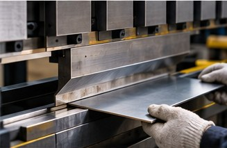
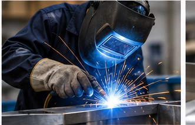
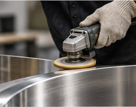
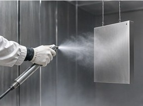
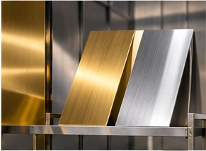
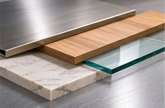

Home / Manufacturing
Custom Metal Fabrication Capabilities
Core fabrication, coordinated surface finishing and multi-material assembly for custom metal products.
Core fabrication
Laser cutting, bending, welding, grinding and polishing, and assembly of custom structures.
Coordinated surface finishing
Finishes are supported through a combination of in-house capabilities and qualified external suppliers. We confirm the route for your project during evaluation.

Laser Cutting
Cuts metal parts from your drawings, the starting point for many fabricated products.
- Typical applications
- Brackets, panels, decorative patterns, furniture parts.
- Material and finish considerations
- Material type and thickness are confirmed per project.

Metal Bending
Forms metal parts into the shapes your design requires.
- Typical applications
- Sheet metal products, frames, enclosures, formed components.
- Material and finish considerations
- Bend details depend on the material and the design.

Welding
Joins metal components into frames, structures and assemblies.
- Typical applications
- Furniture frames, worktables, shelving, custom structures.
- Material and finish considerations
- Weld appearance and finishing requirements are discussed before production.

Grinding & Polishing
Prepares and finishes welds and metal surfaces.
- Typical applications
- Visible stainless steel surfaces on furniture and fixtures.
- Material and finish considerations
- The surface look you need decides the finishing steps.

Spray Finishing
Applies sprayed finishes to metal products according to your color and appearance requirements.
- Typical applications
- Furniture, fixtures, architectural components.
- Material and finish considerations
- Finish route (in-house or qualified external supplier) is confirmed per project.

PVD Plating
Gives metal surfaces a decorative metallic finish.
- Typical applications
- Decorative metal products, furniture and fixtures.
- Material and finish considerations
- Finish route (in-house or qualified external supplier) is confirmed per project.

Multi-Material Integration
Combines metal with wood, glass and sintered stone / rock slab in one product.
- Typical applications
- Tables, display fixtures, architectural details.
- Material and finish considerations
- Materials are chosen with you for each project.

Custom Assembly
Assembles fabricated parts into finished products, including custom structural fabrication.
- Typical applications
- Frames, structures and multi-part products.
- Material and finish considerations
- Assembly method depends on the product design.
Frequently Asked Questions
Which materials can you work with?
Stainless steel is a core material, and other metals can be considered according to project requirements. Metal products can also be combined with wood, glass and sintered stone / rock slab.
Which processes are done by external suppliers?
Some surface-finishing processes are handled by qualified external suppliers. We coordinate the finishing route for your project and confirm it with you during evaluation.
Have Drawings or a Sample Ready?
Send them to us and we will review how your product can be made.